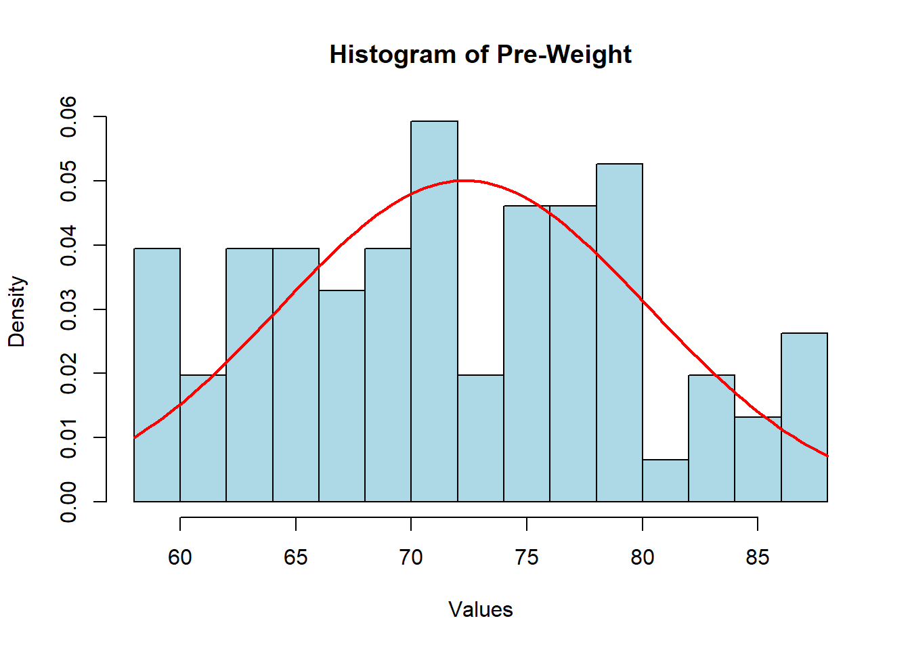
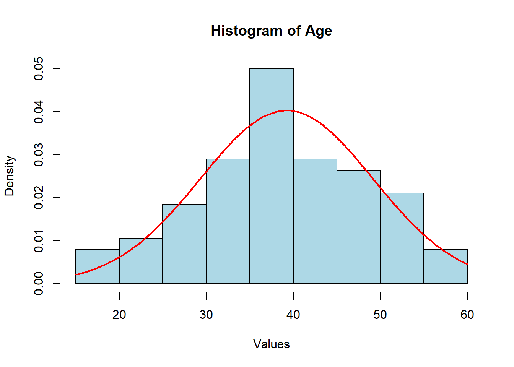
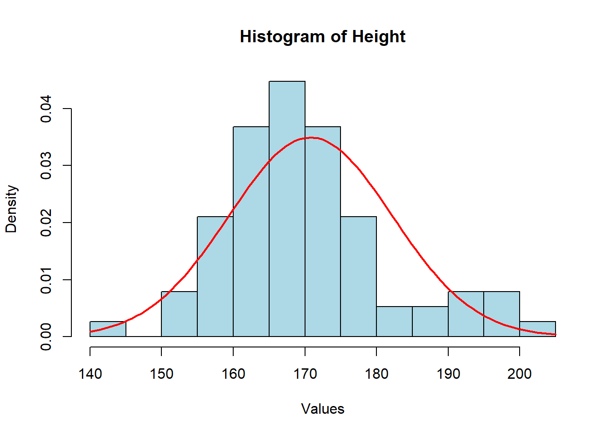
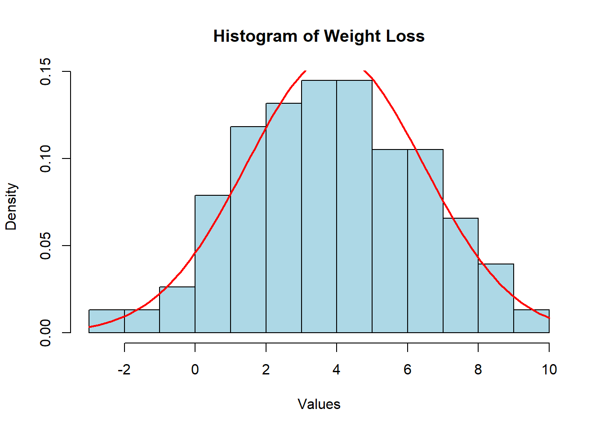

Here is some new data to play with a bit to explore one-way and two-way analysis of variance models. These data represent weight data associated with three different diet types. There are 76 observations of individuals with the following characteristics:
Gender (0/1)
Age (earth years. 🤓)
Height (cm)
Pre.weight & weight6weeks (kg)
Diet (1,2,3)
The data are located as a CSV file named DietData.csv linked from the Canvas page. Load the data in and format things so they look correctly to you.
library(tidyverse)
Warning: package 'ggplot2' was built under R version 4.3.3
Warning: package 'tidyr' was built under R version 4.3.3
Warning: package 'readr' was built under R version 4.3.3
Warning: package 'dplyr' was built under R version 4.3.3
Warning: package 'stringr' was built under R version 4.3.3
Warning: package 'forcats' was built under R version 4.3.3
Warning: package 'lubridate' was built under R version 4.3.3
── Attaching core tidyverse packages ──────────────────────── tidyverse 2.0.0 ──
✔ dplyr 1.1.4 ✔ readr 2.1.5
✔ forcats 1.0.0 ✔ stringr 1.5.1
✔ ggplot2 3.5.1 ✔ tibble 3.2.1
✔ lubridate 1.9.3 ✔ tidyr 1.3.1
✔ purrr 1.0.2
── Conflicts ────────────────────────────────────────── tidyverse_conflicts() ──
✖ dplyr::filter() masks stats::filter()
✖ dplyr::lag() masks stats::lag()
ℹ Use the conflicted package (<http://conflicted.r-lib.org/>) to force all conflicts to become errors
Rows: 76 Columns: 7
── Column specification ────────────────────────────────────────────────────────
Delimiter: ","
dbl (7): Person, gender, Age, Height, pre.weight, Diet, weight6weeks
ℹ Use `spec()` to retrieve the full column specification for this data.
ℹ Specify the column types or set `show_col_types = FALSE` to quiet this message.
Exploratory Data Anlsysis
One of the first things to do is to look at the data and see if there are any obvious things. Go ahead and explore these data visually. What do you see?
It seems as though all of the data are normally distributed meaning that t tests, anovas, and any other statistical test can be applied confidently to this data. We do have to be sure that the Person, Gender, and Diet values are recognized as categories and not a continuous variable as that could cause issues when running statistical tests (this is done in later sections)
hist(dietdata$pre.weight, breaks =15, probability =TRUE, main ="Histogram of Pre-Weight", xlab ="Values", col ="lightblue", border ="black")curve(dnorm(x, mean =mean(dietdata$pre.weight), sd =sd(dietdata$pre.weight)), col ="red", lwd =2, add =TRUE)

hist(dietdata$Age, breaks =15, probability =TRUE, main ="Histogram of Age", xlab ="Values", col ="lightblue", border ="black")curve(dnorm(x, mean =mean(dietdata$Age), sd =sd(dietdata$Age)), col ="red", lwd =2, add =TRUE)

hist(dietdata$Height, breaks =15, probability =TRUE, main ="Histogram of Height", xlab ="Values", col ="lightblue", border ="black")curve(dnorm(x, mean =mean(dietdata$Height), sd =sd(dietdata$Height)), col ="red", lwd =2, add =TRUE)

hist(dietdata$weight6weeks, breaks =15, probability =TRUE, main ="Histogram of weight6weeks", xlab ="Values", col ="lightblue", border ="black")curve(dnorm(x, mean =mean(dietdata$weight6weeks), sd =sd(dietdata$weight6weeks)), col ="red", lwd =2, add =TRUE)
hist(loss$WeightLoss, breaks =15, probability =TRUE, main ="Histogram of Weight Loss", xlab ="Values", col ="lightblue", border ="black")curve(dnorm(x, mean =mean(loss$WeightLoss), sd =sd(loss$WeightLoss)), col ="red", lwd =2, add =TRUE)

1-Way Analysis of Variance
Diet Issues:
The underlying linear model.
\[
y_{ij} = \mu + \tau_{Diet, i} + \epsilon_j
\]
Test the null hypothesis, \(H_O:\)There is no effect of diet on weight loss (e.g., \(\tau_{Diet-1} = \tau_{Diet-2} = \tau_{Diet-3} = 0.0\)). Is there evidence for one diet producing more weight loss than the others? Create an aov analysis and assign it to the variable fit.diet and examine its contents.
# Define modeloss$Diet <-as.factor(loss$Diet)fit.diet <-aov(WeightLoss ~ Diet, data = loss)anova(fit.diet)
Analysis of Variance Table
Response: WeightLoss
Df Sum Sq Mean Sq F value Pr(>F)
Diet 2 60.53 30.2635 5.3831 0.006596 **
Residuals 73 410.40 5.6219
---
Signif. codes: 0 '***' 0.001 '**' 0.01 '*' 0.05 '.' 0.1 ' ' 1
There is strong evidence (P = 0.006596) to reject the null hypothesis. This means that at least one of the diets leads to significantly different weight loss compared to the others.
Are they all significantly different? Try the TukeyHSD() Interpret the results.
The Tukey test shows that diet 3 is statistically different than diets 1 and 2, but diets 1 and 2 are not different from each other. This indicates that diet 3 is the program causing such variation in the means as shown in the anova test.
# Posthoc testtuk <-TukeyHSD(fit.diet)tuk
Tukey multiple comparisons of means
95% family-wise confidence level
Fit: aov(formula = WeightLoss ~ Diet, data = loss)
$Diet
diff lwr upr p adj
2-1 -0.032000 -1.6530850 1.589085 0.9987711
3-1 1.848148 0.2567422 3.439554 0.0188047
3-2 1.880148 0.3056826 3.454614 0.0152020
How much of the variation is explained? If you notice when you do a summary from a lm() (regression) model, it gives you the \(R^2\) values directly (remember \(R^2 = \frac{SS_{model}}{SS_{Error}}\)). Does summary() of your aov model give you that?
summary(fit.diet)
Df Sum Sq Mean Sq F value Pr(>F)
Diet 2 60.5 30.264 5.383 0.0066 **
Residuals 73 410.4 5.622
---
Signif. codes: 0 '***' 0.001 '**' 0.01 '*' 0.05 '.' 0.1 ' ' 1
Since I asked the question, the answer is probably no. Why does it not do this? Probably for historical reasons, which are a bit of a pain in the backside. That being said, there are some tidy ways to fix this issue. I’m going to use the broom package which allows us to clean up (or tidy if you will) the model objects. This will take the model object and pull out all the ANOVA table stuff and put it into a tibble.
library( broom )
Warning: package 'broom' was built under R version 4.3.3
tidy_diet <-tidy( fit.diet )tidy_diet
# A tibble: 2 × 6
term df sumsq meansq statistic p.value
<chr> <dbl> <dbl> <dbl> <dbl> <dbl>
1 Diet 2 60.5 30.3 5.38 0.00660
2 Residuals 73 410. 5.62 NA NA
Now, since it is all easily accessible, we can calculate the \(R^2\) from the new model output.
# Estimate the variance explained from the raw sums of squaresr2_Diet <- tidy_diet$sumsq[1] /sum( tidy_diet$sumsq )r2_Diet
[1] 0.1285269
Gender:
The underlying linear model.
\(y_{ij} = \mu + \tau_{gender, i} + \epsilon_j\)
Independent of the diet, test the null hypothesis \(H_O:\)There is no difference in weight loss between genders (e.g., $*{gender-0} =* = 0.0 $). Is there evidence for one gender being significantly different than another? How much of the variation is explained (another \(R^2\) by gender)?
# partition effects???????????????????loss$gender <-as.factor(loss$gender)fit.gender <-aov(WeightLoss ~ gender, data = loss)anova(fit.gender)
Analysis of Variance Table
Response: WeightLoss
Df Sum Sq Mean Sq F value Pr(>F)
gender 1 0.28 0.2785 0.0438 0.8348
Residuals 74 470.65 6.3601
How do you interpret these results thus far?
It does not seem as though gender has a significant effect on weight loss (P = 0.8348)
How would you compare the models you generated? How do you interpret the findings?
Explain, in words, your findings and interpretation of these findings
Source Code
---title: "Analysis of Variance"author: "Jackson Barnett"subtitle: "In Class Activity"execute: echo: trueformat: html: code-tools: true toc: false---Here is some new data to play with a bit to explore one-way and two-way analysis of variance models. These data represent weight data associated with three different diet types. There are 76 observations of individuals with the following characteristics:- Gender (0/1)- Age (earth years. 🤓)- Height (cm)- Pre.weight & weight6weeks (kg)- Diet (1,2,3)The data are located as a CSV file named `DietData.csv` linked from the Canvas page. Load the data in and format things so they look correctly to you.```{r}library(tidyverse)library(stringr)library(readr)``````{r}dietdata <-read_csv ( "https://docs.google.com/spreadsheets/d/e/2PACX-1vS74VGBIAxot-huGUwwHADBL7gzSDC2-AbB98O9O2_PqAhi4d2d4f5eytBi41Yw4JXIW2j7VHGehTrf/pub?gid=0&single=true&output=csv" )```## Exploratory Data AnlsysisOne of the first things to do is to look at the data and see if there are any obvious things. Go ahead and explore these data visually. What do you see?It seems as though all of the data are normally distributed meaning that t tests, anovas, and any other statistical test can be applied confidently to this data. We do have to be sure that the Person, Gender, and Diet values are recognized as categories and not a continuous variable as that could cause issues when running statistical tests (this is done in later sections)```{r}hist(dietdata$pre.weight, breaks =15, probability =TRUE, main ="Histogram of Pre-Weight", xlab ="Values", col ="lightblue", border ="black")curve(dnorm(x, mean =mean(dietdata$pre.weight), sd =sd(dietdata$pre.weight)), col ="red", lwd =2, add =TRUE)hist(dietdata$Age, breaks =15, probability =TRUE, main ="Histogram of Age", xlab ="Values", col ="lightblue", border ="black")curve(dnorm(x, mean =mean(dietdata$Age), sd =sd(dietdata$Age)), col ="red", lwd =2, add =TRUE)hist(dietdata$Height, breaks =15, probability =TRUE, main ="Histogram of Height", xlab ="Values", col ="lightblue", border ="black")curve(dnorm(x, mean =mean(dietdata$Height), sd =sd(dietdata$Height)), col ="red", lwd =2, add =TRUE)hist(dietdata$weight6weeks, breaks =15, probability =TRUE, main ="Histogram of weight6weeks", xlab ="Values", col ="lightblue", border ="black")curve(dnorm(x, mean =mean(dietdata$weight6weeks), sd =sd(dietdata$weight6weeks)), col ="red", lwd =2, add =TRUE)```## Estimating Mean ValuesMake a table of Weight Loss by gender and diet.```{r}loss <- dietdata |>group_by(Diet) |>mutate(WeightLoss = pre.weight - weight6weeks) |>select( gender, Diet, WeightLoss)head(loss)hist(loss$WeightLoss, breaks =15, probability =TRUE, main ="Histogram of Weight Loss", xlab ="Values", col ="lightblue", border ="black")curve(dnorm(x, mean =mean(loss$WeightLoss), sd =sd(loss$WeightLoss)), col ="red", lwd =2, add =TRUE)```## 1-Way Analysis of Variance*Diet Issues:*The underlying linear model.$$y_{ij} = \mu + \tau_{Diet, i} + \epsilon_j$$Test the null hypothesis, $H_O:$ *There is no effect of diet on weight loss* (e.g., $\tau_{Diet-1} = \tau_{Diet-2} = \tau_{Diet-3} = 0.0$). Is there evidence for one diet producing more weight loss than the others? Create an `aov` analysis and assign it to the variable `fit.diet` and examine its contents.```{r}# Define modeloss$Diet <-as.factor(loss$Diet)fit.diet <-aov(WeightLoss ~ Diet, data = loss)anova(fit.diet)```There is strong evidence (P = 0.006596) to reject the null hypothesis. This means that at least one of the diets leads to significantly different weight loss compared to the others.Are they all significantly different? Try the `TukeyHSD()` Interpret the results.The Tukey test shows that diet 3 is statistically different than diets 1 and 2, but diets 1 and 2 are not different from each other. This indicates that diet 3 is the program causing such variation in the means as shown in the anova test. ```{r}# Posthoc testtuk <-TukeyHSD(fit.diet)tuk```How much of the variation is explained? If you notice when you do a summary from a `lm()` (regression) model, it gives you the $R^2$ values directly (remember $R^2 = \frac{SS_{model}}{SS_{Error}}$). Does `summary()` of your `aov` model give you that?```{r}summary(fit.diet)```Since I asked the question, the answer is probably no. Why does it not do this? Probably for historical reasons, which are a bit of a pain in the backside. That being said, there are some `tidy` ways to fix this issue. I'm going to use the `broom` package which allows us to clean up (or tidy if you will) the model objects. This will take the model object and pull out *all* the ANOVA table stuff and put it into a `tibble`.```{r}library( broom )tidy_diet <-tidy( fit.diet )tidy_diet```Now, since it is all easily accessible, we can calculate the $R^2$ from the new model output.```{r}# Estimate the variance explained from the raw sums of squaresr2_Diet <- tidy_diet$sumsq[1] /sum( tidy_diet$sumsq )r2_Diet```*Gender:*The underlying linear model.$y_{ij} = \mu + \tau_{gender, i} + \epsilon_j$Independent of the diet, test the null hypothesis $H_O:$ *There is no difference in weight loss between genders* (e.g., \$\tau\*{gender-0} =\* \tau{gender-2} = 0.0 \$). Is there evidence for one gender being significantly different than another? How much of the variation is explained (another $R^2$ by gender)?```{r}# partition effects???????????????????loss$gender <-as.factor(loss$gender)fit.gender <-aov(WeightLoss ~ gender, data = loss)anova(fit.gender)```How do you interpret these results thus far?It does not seem as though gender has a significant effect on weight loss (P = 0.8348)# Do genders respond differently to diets?$y_{ijk} = \mu + \tau_{Diet,i} + \tau_{gender,j} + \epsilon_k$So here we do something a bit different. We want to simultaneously ask the following questions:- Do diets influence weight loss?- Do genders influence weight loss?- Is there an interaction where different genders respond differently to different diets?In $R$, this is done as:```{r}# diet model#IS THIS NOT THE SAME AS BEFORE??tidy_diet <-tidy( fit.diet )tidy_dietr2_Diet <- tidy_diet$sumsq[1] /sum( tidy_diet$sumsq )r2_Diet``````{r}# gender model# IS THIS NOT THE SAME AS BEFORE??tidy_gend <-tidy( fit.gender )tidy_gendr2_gend <- tidy_gend$sumsq[1] /sum( tidy_gend$sumsq )r2_gend``````{r}# interaction modelfit.int <-aov(WeightLoss ~ Diet * gender, data = loss)anova(fit.int)tidy_int <-tidy( fit.int )tidy_int```What is the $R^2$ for this model?```{r}# best model variance explainedr2_int <- tidy_int$sumsq[1] /sum( tidy_int$sumsq )r2_int``````{r}#LOOKING FOR AIC??response <-"WeightLoss"predictors <-setdiff(names(loss), response)all_combinations <-unlist(lapply(0:length(predictors), function(x) combn(predictors, x, simplify =FALSE)), recursive =FALSE)model_results <-lapply(all_combinations, function(predictor_set) { predictor_set_escaped <-ifelse(length(predictor_set) >0, paste0("`", predictor_set, "`"), "1") formula <-as.formula(paste0("`", response, "` ~ ", paste(predictor_set_escaped, collapse =" + ")) )# Fit the model model <-lm(formula, data = loss)list(predictors = predictor_set,model = model,AIC =AIC(model) )})results_df <-do.call(rbind, lapply(model_results, function(x) {data.frame(Predictors =paste(x$predictors, collapse =" + "),AIC = x$AIC )}))min_AIC <-min(results_df$AIC)results_df <- results_df %>%mutate(Delta_AIC = AIC - min_AIC) %>%arrange(Delta_AIC) # Sort by delta AIC# Print the results with Delta AIChead(results_df, 10)```# Which Model is Best?How would you compare the models you generated? How do you interpret the findings?*Explain, in words, your findings and interpretation of these findings*